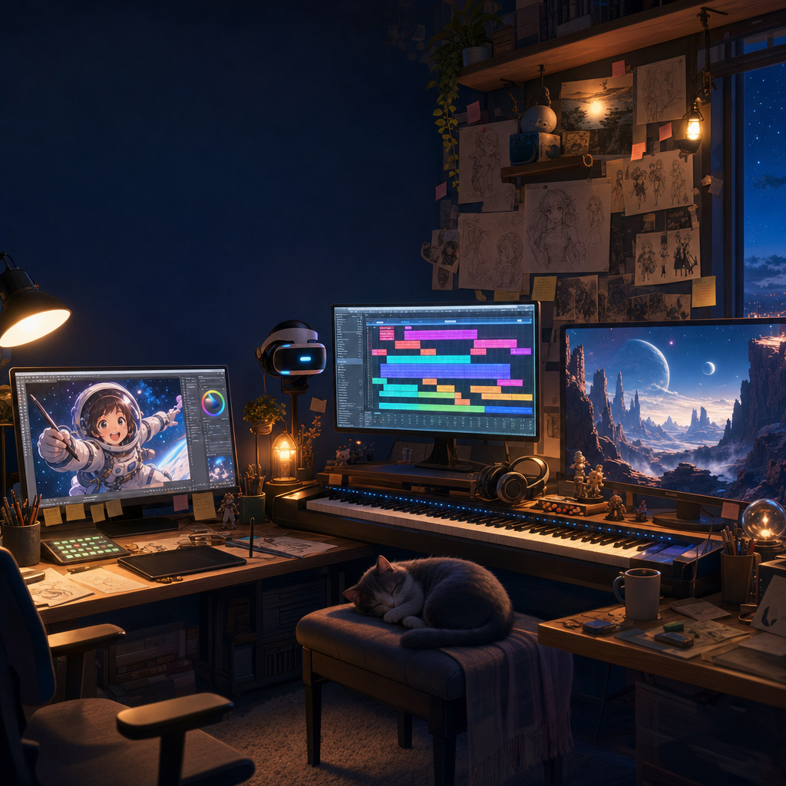
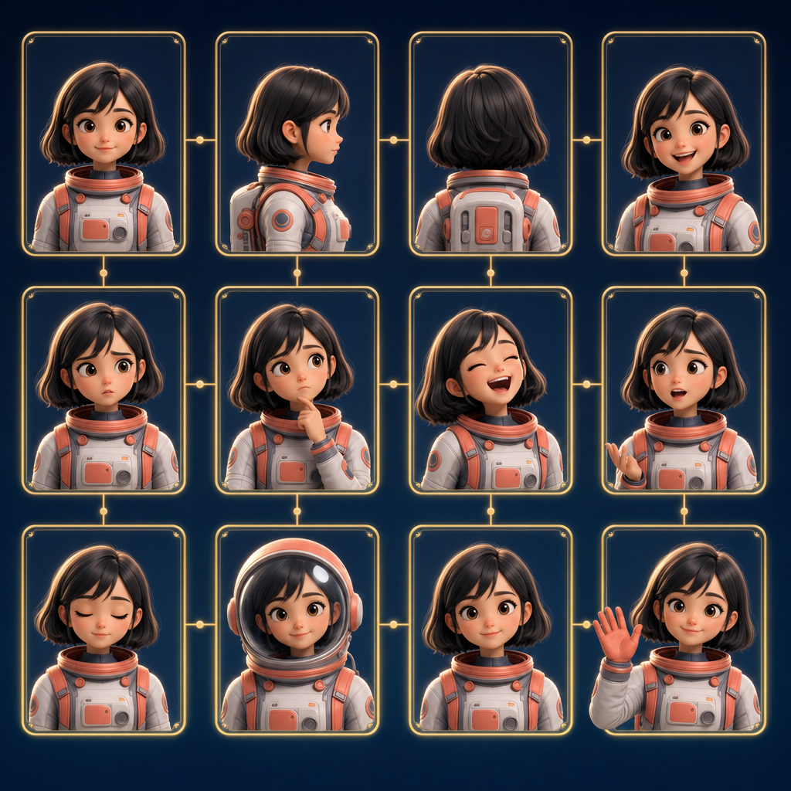
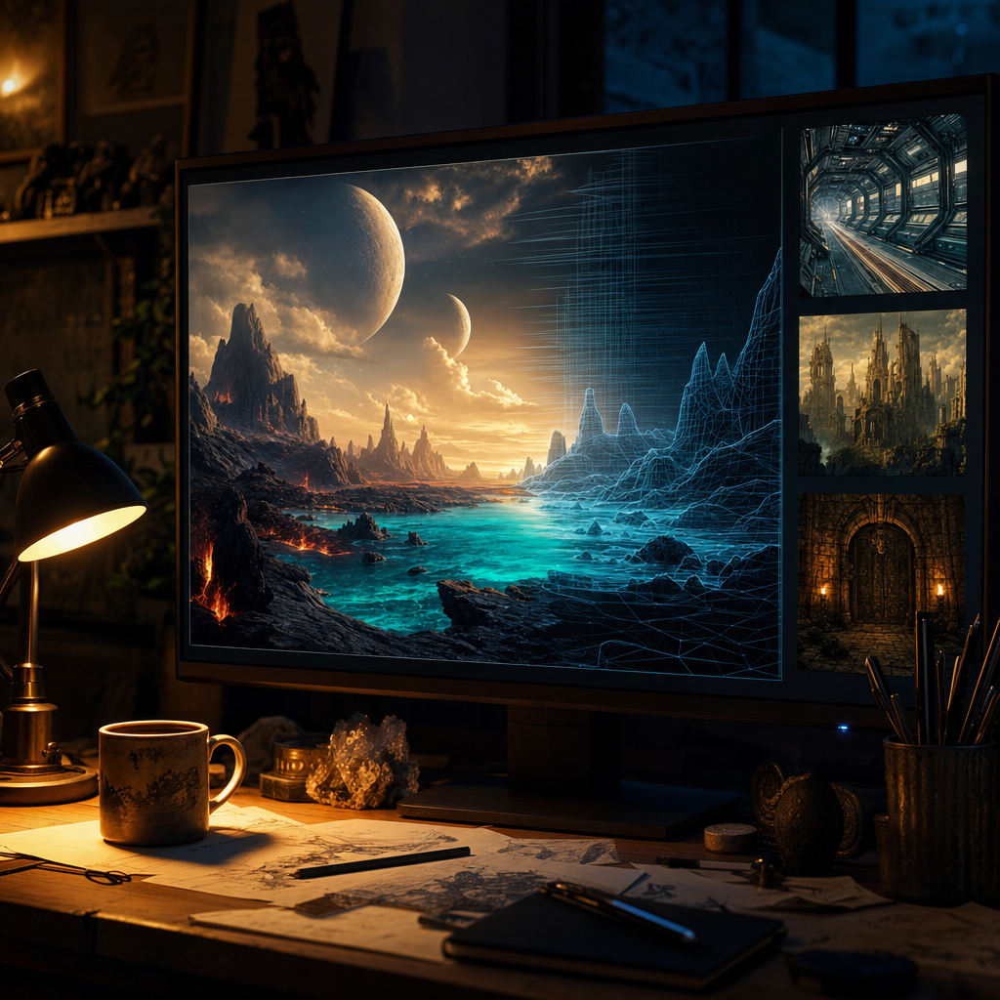
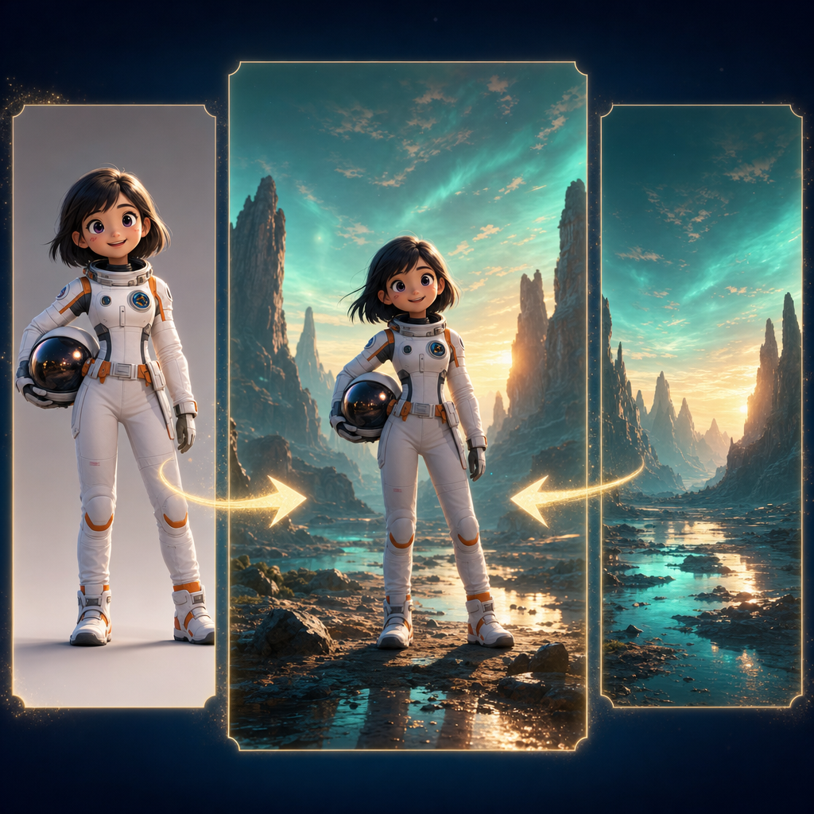
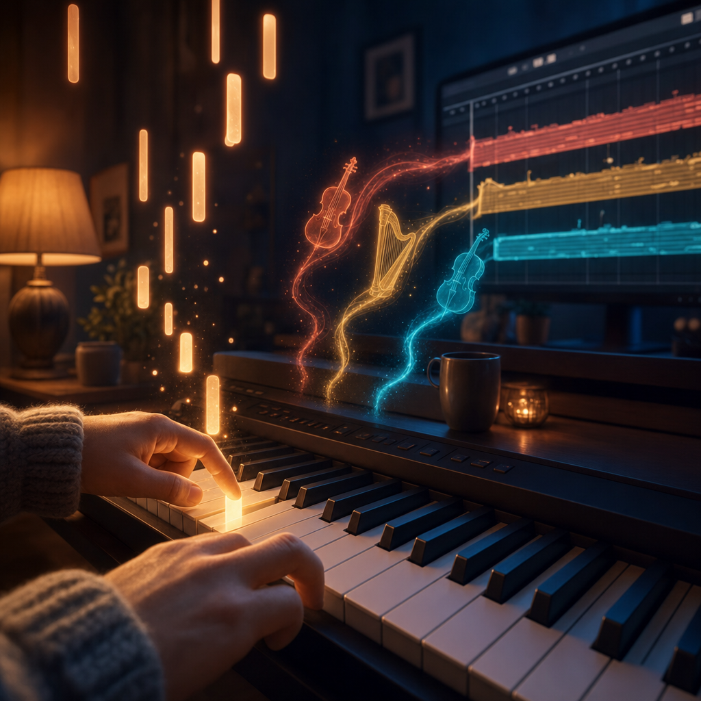
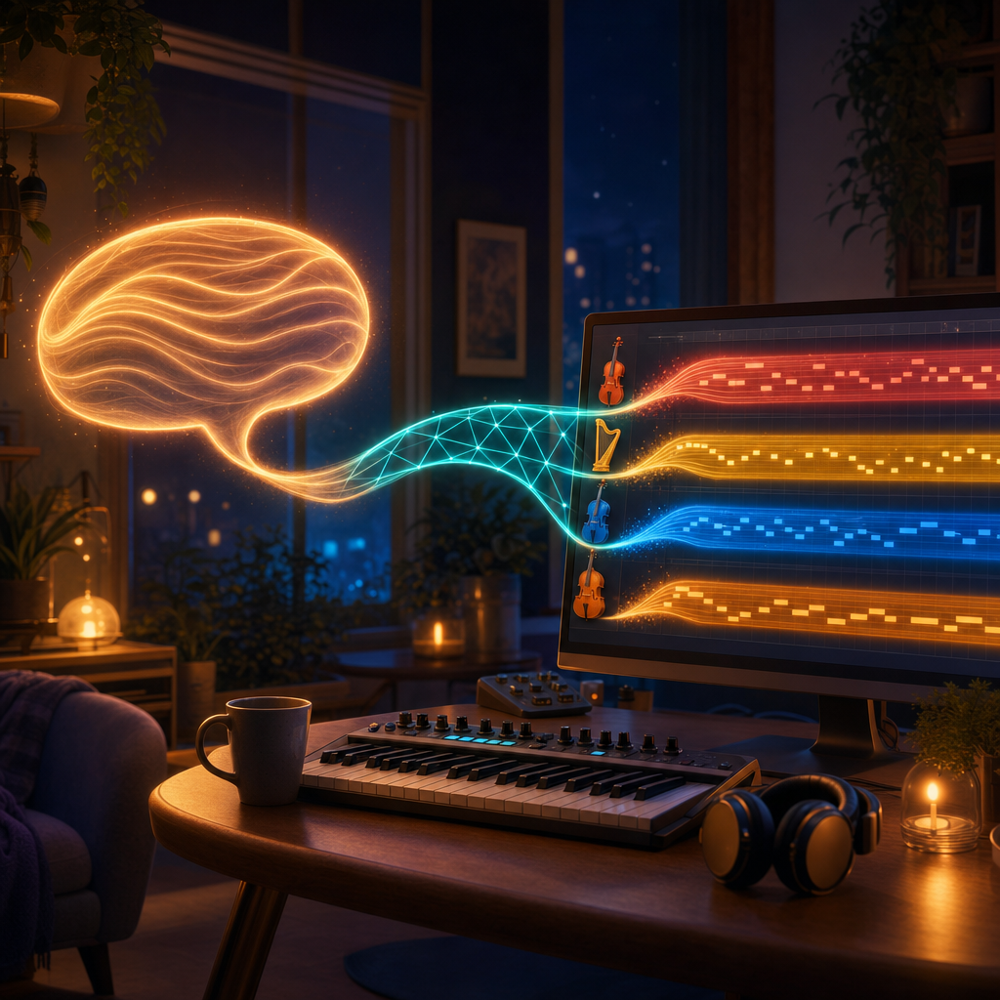

THE WORKSHOP 🧰
Here is exactly how we do it. Take everything.
This page is the open kitchen of VIBE-ANIME. Every technique, every tool, every lesson learned the hard way — written down so YOU can use it. No secrets, no "buy my course," no locked doors. If we figured it out, it belongs to you too.
And every single step below has a completely free road. Money can sometimes buy convenience. It cannot buy the two tools that actually matter: human creativity, and the stubborn desire to make something beautiful. Those you already own.

🎨 The Visual Road — from nothing to a living scene
Our pictures are built in four honest stages. Read them once and the mystery of "how is anime made at home?!" disappears forever.
Stage 1 — Birth of a character 👧✨
Characters begin in an anime image model running on an ordinary home computer. We describe a character in words — her age, her mood, her practical spacesuit, the kindness in her eyes — and generate her again and again until one face makes us say "there she is." That moment is not technical. It is the same moment every author knows: a stranger becomes your character.
🤝 Important honesty: every character is AI-designed from the start. No photographs of real people are used anywhere in this project — not for faces, not for voices. Our characters resemble only themselves.
Stage 2 — Teaching the computer to remember her 🧠
One perfect picture is not enough — anime needs the SAME character from every
angle, in every emotion, in every light. So we train a
LoRA
A LoRA is a small "character memory" file that teaches an
image tool to remember one specific character, so she stays the same person in every
new picture. Training one at home takes hours, not money. 📖

Stage 3 — Building the worlds 🌋
The stages our characters walk through — spaceship corridors, alien canyons, ancient cities, dungeon halls — are generated as detailed, realistic environments. This contrast is a deliberate artistic choice you may recognize from films like Spider-Man: Into the Spider-Verse: stylized characters against rich, believable worlds. The world's realism makes the danger feel real; the characters' style keeps the heart soft.

Stage 4 — The magic of compositing 🪄
Characters and worlds are created separately — then married together. Compositing is the craft of making them agree: matching the direction of light, the color of the sunset on her face, the softness of her shadow on alien ground. When it works, nobody asks "was she added to that background?" They just believe she's standing there.

And the voices? 🗣️
Voices are designed, not recorded. We write a description — "a warm, confident young woman with a Romanian accent, a smile hiding in her voice" — and a voice-design tool creates a completely synthetic voice matching it. No actor is imitated, no real person's voice is cloned. Madie's voice belongs to Madie alone.
🎻 The Music Road — two paths, one destination
Half of anime is music. Ours is classical: public-domain compositions by the great masters, free for all humanity, performed at home. Every main character carries a Romantic-era leitmotif — Madie's is the solo violin of Scheherazade. There are two honest ways to perform this music at home, and we walk both.
Path A — The human way (slow, free, and yours) 🎹
Nir is learning piano with Simply Piano — and here's the beautiful secret:
free apps do the same job. Falling-note apps show you exactly which
key to press and when; you don't need to read sheet music to begin. You learn a piece
phrase by phrase, slowly. Then, in free music software with a
free orchestra sample library
A sample library is a collection of recordings of real
instruments — every note of a real violin, harp, or cello. Free libraries let your
keyboard "become" any orchestra instrument. 📖

Path B — The AI conductor (fast, and also free) 🤖🎼
The second path: describe what you need in plain English — "a gentle waltz for strings and harp, warm and hopeful, in the style of Tchaikovsky" — and AI music tools compose and arrange it, delivering separated instrument tracks you can edit, fix, and humanize. You remain the director: the AI proposes, you decide. Many of these tools have free tiers; local free options grow every month.

Which path is better? Neither. Path A puts the music in your hands forever. Path B puts an orchestra at your desk today. Most episodes will use both — and both cost nothing but curiosity.
📖 The open kitchen — everything is written down
Every pipeline above is documented step by step in our public GitHub repository: the exact tools, the settings that worked, the mistakes that cost us a week so they won't cost you one. When we discover something better, the recipe is updated. When we fail, we write down the failure too — an honest kitchen includes the burnt cakes.
Never used GitHub? It's just a public folder of documents — you can read everything with no account. And if you'd rather never touch it, everything important will also be explained here and in the 🎓 Lectures.
✨ Send one tiny thing
This is the heart of everything. You don't need to make an episode. You don't need to know AI. You don't need to feel ready. Pick ONE:
- 🔭 One astronomy discovery that amazed you — it may become a destination
- 🌋 One landscape you generated — it may become a world
- 🎻 One melody or musical phrase — it may become someone's leitmotif
- 🏺 One historical fact or correction — it may rebuild a civilization properly
- 🐉 One monster, trap, or puzzle idea — the party will suffer it gratefully
- 🔎 One scientific correction — accuracy is a gift, never an insult
- 💬 One kind suggestion — "what if…" has started every good thing here
Send it by email — a sentence is enough, perfection is not required, and every used contribution is credited (or kept anonymous if you prefer).
The only real requirement 🌱
Not talent. Not money. Not a fast computer. Just this: the willingness to be a beginner in public, one small step at a time. That's the entire entrance exam, and you have already passed it by reading this far.
Now go make something. And tell us what you discover.